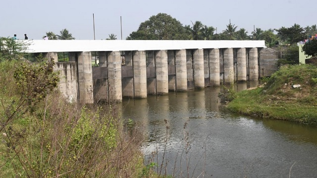

The Adyar River serves as a vital geographic landmark in Anakaputhur, flowing along its western border and playing a central role in the suburb's landscape. Historically, the river was essential for the local weaving community, though in recent decades, it has become a primary focus for flood management due to its proximity to the Chembarambakkam Lake release point. The area around the Anakaputhur Bridge is particularly significant, as it marks a key transit point connecting the suburb to Thiruneermalai. While the river has faced environmental issues like pollution and siltation, it is currently the subject of major eco-restoration projects aimed at widening the riverbed and strengthening the bunds to prevent future flooding during the monsoon season.